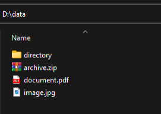
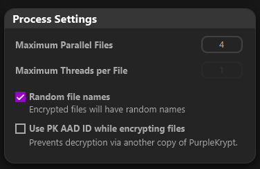
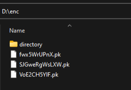
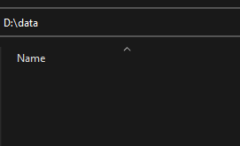
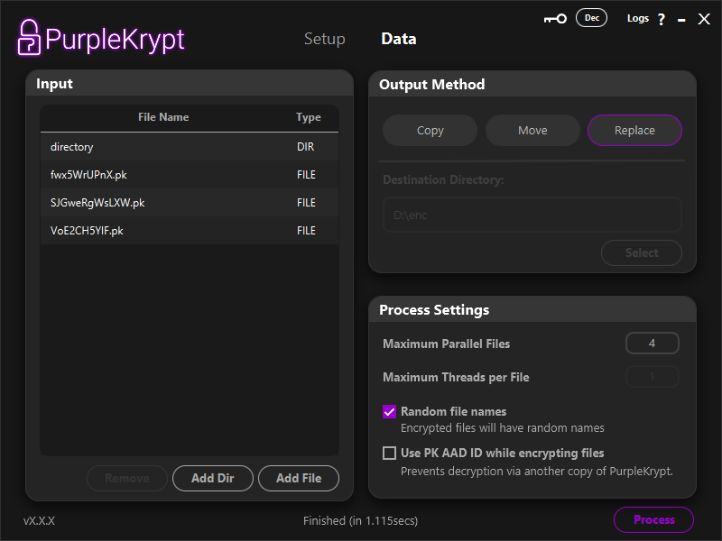
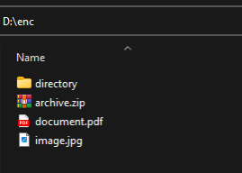

4. Encrypting & Decrypting Files
by: saaiqSAS
Last Updated: 9/2/2026
In this section, we'll walk you through the steps to encrypt your files using PurpleKrypt. You can either create a new encryption key or select an existing one to keep your data safe and secure.
Setup Key
For simplicity, we'll use a password-only setup to process our data, as shown in (Fig.3.1). Once you have configured your key usage, click the Confirm button. You will then be taken to the Data tab. Note that the details of the key usage confirmation will appear in the Summary box of the Setup tab. Make sure to select File in the Data Type box.
 Fig.5.1
Encrypting Files
Once you are in the Data tab, you can easily drag and drop the files or folders you wish to encrypt onto the table in the Input section. Alternatively, you can use the Add File button to add individual files, or the Add Dir button to add directories or folders.
In this tutorial, we'll encrypt the files shown in (Fig.5.2). These files are then dropped onto the table, as shown in (Fig.5.3). You can select one of the following three output methods:
1. Copy keeps the input files untouched, while the processed (encrypted or decrypted) files are saved to the specified destination directory.
2. Move saves the processed files to the destination directory and then securely deletes the input files if no errors are encountered during processing. The secure delete method used in PurpleKrypt overwrites the file multiple times with different binary patterns before deleting it.
3. Replace saves the processed file to its corresponding input file location, and if no errors are encountered, the original input files are securely deleted.
Fig.5.1
Encrypting Files
Once you are in the Data tab, you can easily drag and drop the files or folders you wish to encrypt onto the table in the Input section. Alternatively, you can use the Add File button to add individual files, or the Add Dir button to add directories or folders.
In this tutorial, we'll encrypt the files shown in (Fig.5.2). These files are then dropped onto the table, as shown in (Fig.5.3). You can select one of the following three output methods:
1. Copy keeps the input files untouched, while the processed (encrypted or decrypted) files are saved to the specified destination directory.
2. Move saves the processed files to the destination directory and then securely deletes the input files if no errors are encountered during processing. The secure delete method used in PurpleKrypt overwrites the file multiple times with different binary patterns before deleting it.
3. Replace saves the processed file to its corresponding input file location, and if no errors are encountered, the original input files are securely deleted.

Fig.5.2
 Fig.5.3
Under Process Settings (Fig5.4), you can choose the number of files to process in parallel, whether to assign random filenames to encrypted files, and whether to use the PK AAD ID. The PK AAD ID is an array of numbers that is randomly generated the first time you open a copy of PurpleKrypt and is stored in the pk_aad_id file.
Enabling the PK AAD ID option includes this data during encryption (used as AAD for AES-256) and prevents decryption using another copy of PurpleKrypt that has a different pk_aad_id file, even if the correct keyfile or password is provided. Use this option with caution, and it is highly recommended to back up your PurpleKrypt copy or the pk_aad_id file itself. If you lose this PK AAD ID, you will not be able to decrypt the encrypted data. (Be responsible.)
Fig.5.3
Under Process Settings (Fig5.4), you can choose the number of files to process in parallel, whether to assign random filenames to encrypted files, and whether to use the PK AAD ID. The PK AAD ID is an array of numbers that is randomly generated the first time you open a copy of PurpleKrypt and is stored in the pk_aad_id file.
Enabling the PK AAD ID option includes this data during encryption (used as AAD for AES-256) and prevents decryption using another copy of PurpleKrypt that has a different pk_aad_id file, even if the correct keyfile or password is provided. Use this option with caution, and it is highly recommended to back up your PurpleKrypt copy or the pk_aad_id file itself. If you lose this PK AAD ID, you will not be able to decrypt the encrypted data. (Be responsible.)

Fig.5.4
Once everything is set, click the Process button to begin encrypting your files. You can click the Logs button at the top left to view detailed process information (Fig5.7).
 Fig.5.7
Since we selected Move as the output method, the encrypted files are now stored in the destination directory we provided (Fig5.5). If we check the original directory that contained the input files, we can see that it is now empty (Fig5.6).
Fig.5.7
Since we selected Move as the output method, the encrypted files are now stored in the destination directory we provided (Fig5.5). If we check the original directory that contained the input files, we can see that it is now empty (Fig5.6).

Fig.5.5

Fig.5.6
Decrypting Files
To decrypt files, you can use the same key configuration that was used to encrypt the data. If you generated a keyfile, select that keyfile and provide the password if the keyfile is encrypted. For this tutorial, we'll simply go to the Setup tab and change the function type to Decrypt, as shown in (Fig.5.8).
 Fig.5.8
Afterward, return to the Data tab. In the Input section, select each of the original files and remove them by clicking the Remove button. Once the table is empty, drag and drop the encrypted files into the Input section. This time, instead of Move, we'll use Replace as the output method (Fig5.9).
Fig.5.8
Afterward, return to the Data tab. In the Input section, select each of the original files and remove them by clicking the Remove button. Once the table is empty, drag and drop the encrypted files into the Input section. This time, instead of Move, we'll use Replace as the output method (Fig5.9).

Fig.5.9
Once everything is set, click the Process button to begin decrypting your files. After the process completes, if we check the directory that contained the encrypted input data, we can see that the encrypted files have been replaced with their decrypted versions (Fig5.10).

Fig.5.10